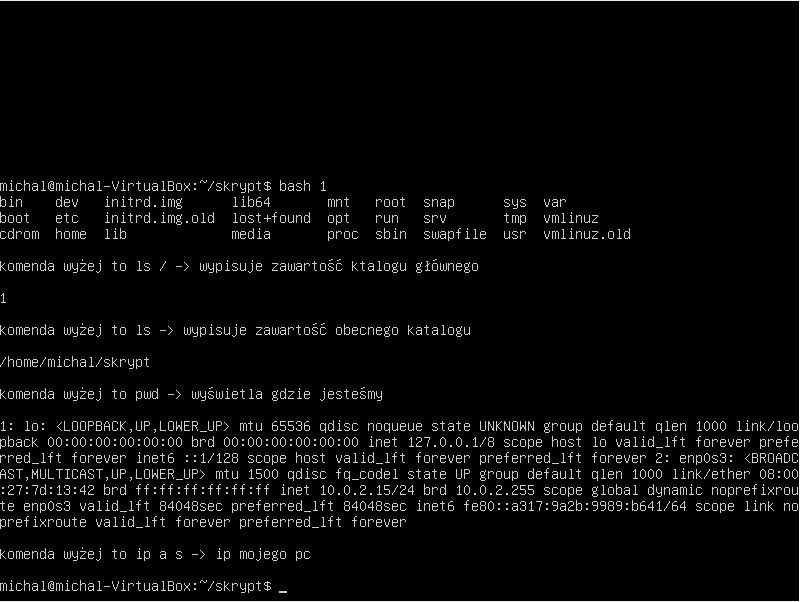

uczen@oem-Lenovo-G500:/$ cat etc/passwd root:x:0:0:root:/root:/bin/bash daemon:x:1:1:daemon:/usr/sbin:/usr/sbin/nologin bin:x:2:2:bin:/bin:/usr/sbin/nologin sys:x:3:3:sys:/dev:/usr/sbin/nologin sync:x:4:65534:sync:/bin:/bin/sync games:x:5:60:games:/usr/games:/usr/sbin/nologin man:x:6:12:man:/var/cache/man:/usr/sbin/nologin lp:x:7:7:lp:/var/spool/lpd:/usr/sbin/nologin mail:x:8:8:mail:/var/mail:/usr/sbin/nologin news:x:9:9:news:/var/spool/news:/usr/sbin/nologin uucp:x:10:10:uucp:/var/spool/uucp:/usr/sbin/nologin proxy:x:13:13:proxy:/bin:/usr/sbin/nologin www-data:x:33:33:www-data:/var/www:/usr/sbin/nologin backup:x:34:34:backup:/var/backups:/usr/sbin/nologin list:x:38:38:Mailing List Manager:/var/list:/usr/sbin/nologin irc:x:39:39:ircd:/var/run/ircd:/usr/sbin/nologin gnats:x:41:41:Gnats Bug-Reporting System (admin):/var/lib/gnats:/usr/sbin/nologin nobody:x:65534:65534:nobody:/nonexistent:/usr/sbin/nologin systemd-network:x:100:102:systemd Network Management,,,:/run/systemd/netif:/usr/sbin/nologin systemd-resolve:x:101:103:systemd Resolver,,,:/run/systemd/resolve:/usr/sbin/nologin syslog:x:102:106::/home/syslog:/usr/sbin/nologin messagebus:x:103:107::/nonexistent:/usr/sbin/nologin _apt:x:104:65534::/nonexistent:/usr/sbin/nologin uuidd:x:105:111::/run/uuidd:/usr/sbin/nologin avahi-autoipd:x:106:112:Avahi autoip daemon,,,:/var/lib/avahi-autoipd:/usr/sbin/nologin usbmux:x:107:46:usbmux daemon,,,:/var/lib/usbmux:/usr/sbin/nologin dnsmasq:x:108:65534:dnsmasq,,,:/var/lib/misc:/usr/sbin/nologin rtkit:x:109:114:RealtimeKit,,,:/proc:/usr/sbin/nologin speech-dispatcher:x:110:29:Speech Dispatcher,,,:/var/run/speech-dispatcher:/bin/false whoopsie:x:111:117::/nonexistent:/bin/false kernoops:x:112:65534:Kernel Oops Tracking Daemon,,,:/:/usr/sbin/nologin saned:x:113:119::/var/lib/saned:/usr/sbin/nologin pulse:x:114:120:PulseAudio daemon,,,:/var/run/pulse:/usr/sbin/nologin avahi:x:115:122:Avahi mDNS daemon,,,:/var/run/avahi-daemon:/usr/sbin/nologin colord:x:116:123:colord colour management daemon,,,:/var/lib/colord:/usr/sbin/nologin hplip:x:117:7:HPLIP system user,,,:/var/run/hplip:/bin/false geoclue:x:118:124::/var/lib/geoclue:/usr/sbin/nologin gnome-initial-setup:x:119:65534::/run/gnome-initial-setup/:/bin/false gdm:x:120:125:Gnome Display Manager:/var/lib/gdm3:/bin/false oem:x:29999:29999:OEM Configuration (temporary user),,,:/home/oem:/bin/bash uczen:x:1000:1000:uczen,,,:/home/uczen:/bin/bash uczen1:x:1001:1001:uczen1,,,:/home/uczen1:/bin/bash
uczen@oem-Lenovo-G500:/$ tail etc/passwd pulse:x:114:120:PulseAudio daemon,,,:/var/run/pulse:/usr/sbin/nologin avahi:x:115:122:Avahi mDNS daemon,,,:/var/run/avahi-daemon:/usr/sbin/nologin colord:x:116:123:colord colour management daemon,,,:/var/lib/colord:/usr/sbin/nologin hplip:x:117:7:HPLIP system user,,,:/var/run/hplip:/bin/false geoclue:x:118:124::/var/lib/geoclue:/usr/sbin/nologin gnome-initial-setup:x:119:65534::/run/gnome-initial-setup/:/bin/false gdm:x:120:125:Gnome Display Manager:/var/lib/gdm3:/bin/false oem:x:29999:29999:OEM Configuration (temporary user),,,:/home/oem:/bin/bash uczen:x:1000:1000:uczen,,,:/home/uczen:/bin/bash uczen1:x:1001:1001:uczen1,,,:/home/uczen1:/bin/bash uczen@oem-Lenovo-G500:/$ tail -2 etc/passwd uczen:x:1000:1000:uczen,,,:/home/uczen:/bin/bash uczen1:x:1001:1001:uczen1,,,:/home/uczen1:/bin/bash uczen@oem-Lenovo-G500:/$ head etc/passwd root:x:0:0:root:/root:/bin/bash daemon:x:1:1:daemon:/usr/sbin:/usr/sbin/nologin bin:x:2:2:bin:/bin:/usr/sbin/nologin sys:x:3:3:sys:/dev:/usr/sbin/nologin sync:x:4:65534:sync:/bin:/bin/sync games:x:5:60:games:/usr/games:/usr/sbin/nologin man:x:6:12:man:/var/cache/man:/usr/sbin/nologin lp:x:7:7:lp:/var/spool/lpd:/usr/sbin/nologin mail:x:8:8:mail:/var/mail:/usr/sbin/nologin news:x:9:9:news:/var/spool/news:/usr/sbin/nologin uczen@oem-Lenovo-G500:/$ head -2 etc/passwd root:x:0:0:root:/root:/bin/bash daemon:x:1:1:daemon:/usr/sbin:/usr/sbin/nologin
| uczen1: | x | 1001 | 1001 | :uczen1 | /home/uczen1:/bin/bash |